Pictures Select a picture to view it full size; arrow keys move between pictures, Escape closes.
Aircraft field work Inside the Convair research aircraft, 8 April 2008. 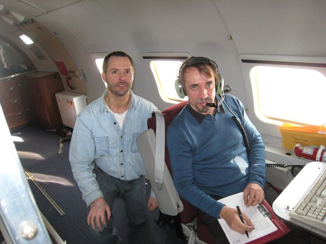
Alexie and Jason aboard the Convair (camera date 7 April 2009). Colleagues and conferences 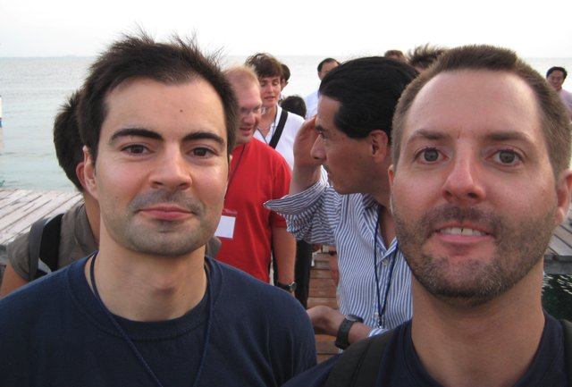
Hugh and Jason at the International Conference on Clouds and Precipitation (ICCP), 2008. Hugh in Cancún, 2008. Science figures 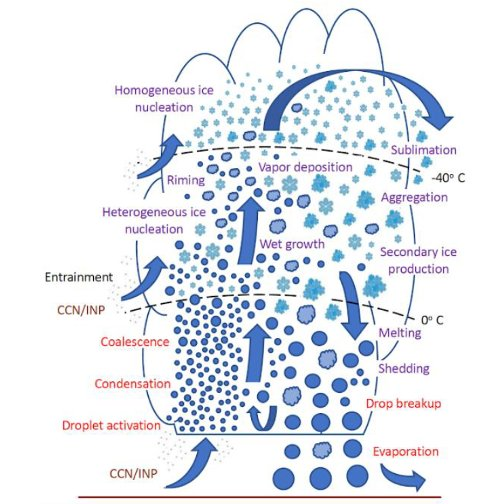
Schematic of microphysical processes in a mixed-phase convective cloud, from droplet activation and CCN/INP to melting, shedding and evaporation. 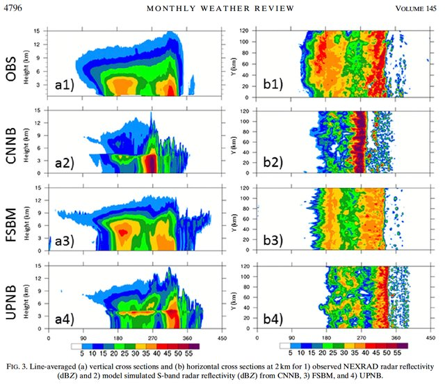
Observed NEXRAD reflectivity compared with reflectivity simulated by three bin microphysics schemes (CNNB, FSBM, UPNB). Fig. 3 of an article in Monthly Weather Review, vol. 145. 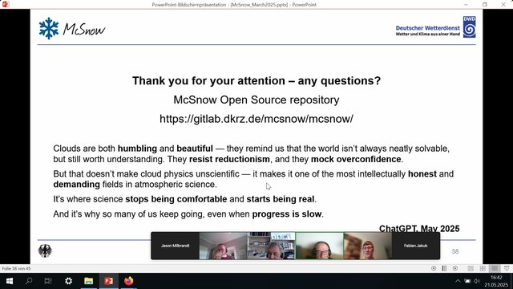
Closing slide of a McSnow talk (Deutscher Wetterdienst), May 2025, with a ChatGPT-written passage on why cloud physics is worth the effort. Family and home Edna Milbrandt De Paz, portrait, December 2023. 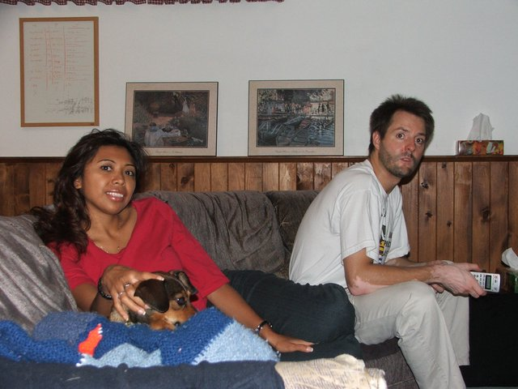
At home with the dog, May 2004. 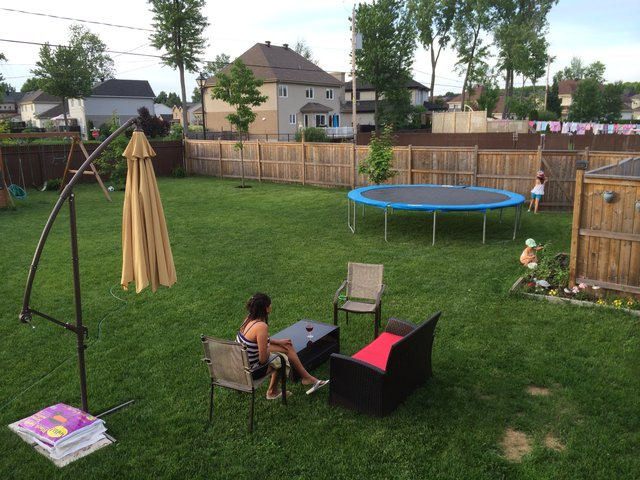
The backyard, 8 June 2014. 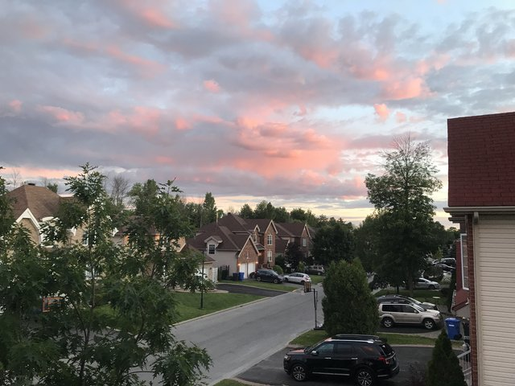
Evening sky over the street, 21 June 2019. Selfie, 26 September 2020. Logos and insignia 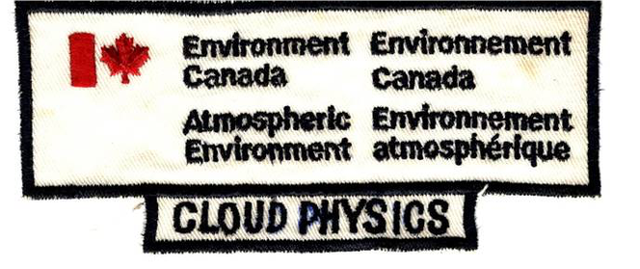
Cloud Physics patch, Atmospheric Environment Service, Environment Canada. 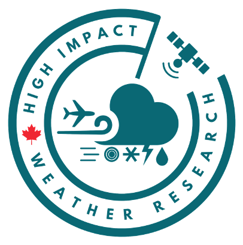
Logo of the former High Impact Weather Research (HIWR) section. Environment and Climate Change Canada wordmark. 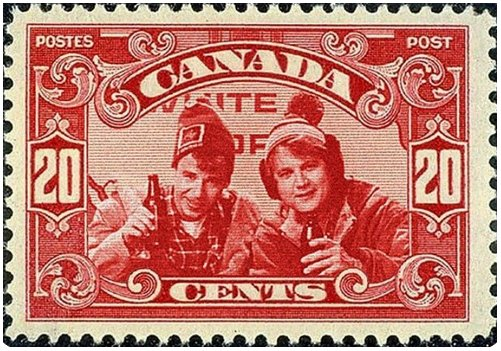
Bob and Doug McKenzie on a 20-cent Canada stamp design.